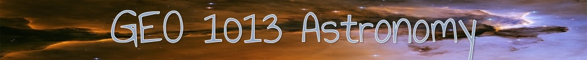
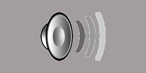

Home
Astronomical Revolution
Scientific Revolution
Study Tips
References
Assessment
Astronomical Revolution
Astronomers
Astronomy Laws
Self Check
Instructions
During this section of the learning module, you will learn about astronomy laws and concepts.
Each Astronomy Law tab will allow you to navigate to another page to see animations about the laws.
These animations will allow you to learn the concepts on a deeper level.
Please close the outside link to return to the learning module.
You may revisit these sites at any time, by returning to this page and clicking the links.
You may begin by clicking one of the tabs below. You must visit each tab.
Geocentricity
Retrograde Motion
Stellar Parallax
Kepler's Laws

To continue,click the next topic